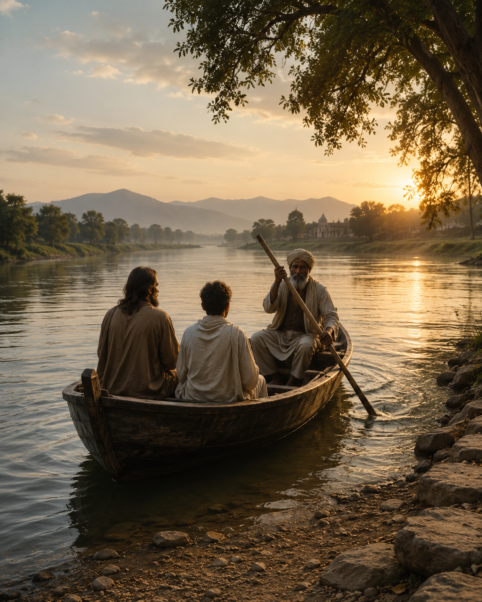

An age is called Dark not because the light fails to shine,
but because people refuse to see it.
-- James Michener, "Space"
In Dwapara [Yuga] the people can understand the fine matters
or electricities and their attributes,
the creative powers of the external world.
-- Sri Yukteswar, "Holy Science" 1894
--------------------------------------------------------
With feet in the swiftly flowing stream,
lost in thought, amid a warm daydream,
Zarathustra awaits the ferry nearing from the haze,
and does not notice a young onlooker's intent gaze;
"A man cannot step into the same river twice,"
dares the young man to offer his advice,
Zarathustra smiles, "Wise words from the mouth of a youth";
not expecting, from one looking so bashful, to offer such truth,
"It was Siddhartha, the wise old ferryman, who taught me this;
each crossing with him offers life lessons not to miss,
I myself do not have such wisdom, I must confess,
but how rude of me to interrupt, you can call me Heracles."
"Pleasure to meet you, I go by the name Zarathustra,
I am not acquainted with your ferryman Siddhartha,
only heard of him and was hoping we could meet somehow;
soon I think - he is not far, I see the boat’s prow"
In silence they wait as the ferryboat draws near,
with only the sound of the jungle and rushing river to hear.
"The sun already hangs too low, no time for another crossing —
you’re welcome to stay the night in my humble dwelling",
Siddhartha greets his expectant passengers as he alights with ease.
"I can sleep here where the grass is thick and soft under the trees",
Heracles offers, but Siddhartha responds with a shake of his gray head.
"Here are scoundrels who will rob you, and hungry beasts looking to be fed",
and he gestures to a narrow path and for them to follow his lead
Heracles wants to protest, but demurely follows as his companions proceed.
Later, after a simple meal of rice, cheese, dahl and paneer,
Siddhartha nods at Zarathustra: "Your life story - I'd love to hear."
After a pensive silence, Zarathustra begins: "There is little, yet much to say,
at thirty years old, I left my house and community as I needed to get away,
and retreat into the solitude that I believed only the mountain provides,
and there in silence to contemplate the endless secrets that nature hides;
then after ten years, I felt that my cup overflowed with joyful bliss;
the time was ripe to leave my cave and my message to mankind was this:
The Coming of Super Man - humanity's continued existence and future,
he who will honor brother Sun and sister Moon and protect our Mother,
as in the heavens is divine, so is our custody of the Earth;
in fierce struggle against the Last Man’s relentless onslaught,
those who coldly poisons and plunders and whose rule must be fought,
in pursuit of perpetual comfort no matter the price their children will pay,
without creative thought, without daring to dream they follow the easy way"
Zarathustra sighs despondently and hangs his head in a sign of despair.
"So, how was your message received, did the people seem to care?"
"My words fell on barren ground, reason no longer held any sway,
while a tightrope walker's antics kept their attention at bay.
One last time I had to try, once more to break through if I can —
look, we are the artists’ rope stretched between beast and Super Man,
we are the bridge, not the goal - the crossing and fall are within our scope —
in them who live as if they've already tumbled, resides the crossing's hope,
those who in self-disdain, reach for the other shore, no matter the price
and in their fall, their lives are offered to Mother Earth as sacrifice -
to build a home for the Super Man — in compassion for both plant and beast,
pure and tireless in all endeavors, not caring for himself in the least,
in forgiveness toward his ancestors, in subjugation to the future of the youth.
Hear my call above the rumble of thunder as rain drops begin to fall,
see the Super Man, in the lightning's brilliant flash, please heed my call."
"I was laughed at — nothing I say could make them change their heart,
In their eyes, self-satisfied mediocrity — it was futile from the start,
without values, they asked: what is love, what does longing have to show,
what is a star, what's the universe?, empty questions, not really wanting to know
with no perspective, they were hopping around like little fleas in the dust,
all equally small, dulling the emptiness of their lives, with no-one to trust,
yet convinced that the secret of happiness is in their fold.
Alas, the only task left for me was to call: the Last Man, behold!"
A silence descends as the group ponders what was said.
After a while, it is the host who looks up and nods his head,
he wistfully smiles as he beckons Heracles:
"So speaking of tasks, how goes your progress?"
Heracles blushes awkwardly, pointing one finger to show,
"All done except binding Cerberus, that's where I now must go;
he, the three-headed dog who vigilantly guards Hades' gate,
but, it’s not as simple as it might at first indicate -
with each of the heads, his gaze on all lost souls he fix -
for Hades is not solely for those who passed beyond the Styx;
it is also where Zarathustra’s "Last Man" would reside,
held captive by his stare from which no one can shield or hide.
It is here that Cerberus obeys the orders, like a faithful hound,
to monitor the flow of Kronos - those mundane events in time and space,
or interventions by Kairos that cause critical change to take place
enabled by Kybernetes, the quantum oracle, that calculates in an unknown dimension,
by entangling of qubits, and collapsing of states, the answer to any question.
As I say, it is a finely woven web, difficult to unravel —
where shall I begin, and where to end, with so many options on the table?"
Siddhartha nods in agreement: "Perhaps we can leave this for another day,
we must all get a good night's rest before you each depart on your way."
After a breakfast of rice and milk, Heracles voiced his concerns that remain:
"I have wondered: is it valid to place the 'Last Man' in the hound's domain?
As mentioned before, Hades is not solely the departed's final destination,
it’s also for souls who no longer identify with their current incarnation,
those who prematurely defy their purpose and the path karma indicate,
to float like driftwood in a swiftly flowing stream, surrendered to fate.
Here one clearly sees the role Kybernetes, Kronos and Kairos have to play,
for they provide distraction to these deadened souls trudging on their way.
With incessant repetition of empty opinions, group identity is maintained,
while artificial conflicts keep them insecure with their ego's sustained
This soul-deadening idleness is relieved by idiotic games played on repeat,
and by wagering on the outcome of events, hoping, happenstance to defeat.
One can see that Cerberus holds them locked in self-imposed incarceration
by suppressing any spark of mindfulness, with no further need for subjugation.
So I ask myself, who would benefit if I were to bind the custodian,
if the prisoners do not want freedom or to seek their liberation"
In silence both the travellers look at Siddhartha expectantly,
as he steers the boat, evading their unasked question quietly.
With eyes averted, he finally responds, as the berthing place appear:
"Māyā" — just one word, spoken softly for both passengers to hear.
-----------------------------------------------------------------
"Gate, gate, pāragate, pārasamgate, bodhi svāhā" -
Gone,
Gone,
Gone beyond,
To the other side - beyond -
Awakening.
Amen!